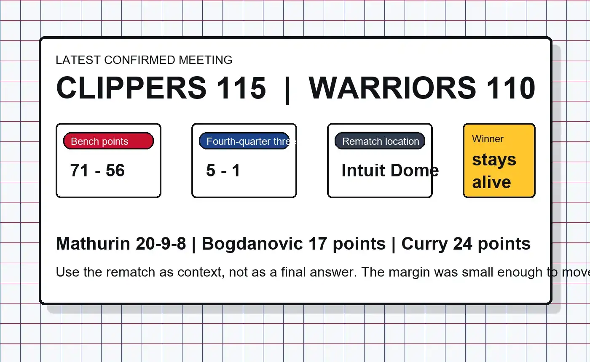

Loser is eliminated
This is not a regular-season cleanup game. It is the West 9-vs-10 Play-In slot, which means one team goes home Wednesday night.
Golden State goes back to Intuit Dome on Wednesday, April 15, 2026, for an immediate rematch with the Clippers. This time the stakes are cleaner and harsher: the loser is out, and the winner moves one step closer to the West No. 8 seed.
The basic schedule details are straightforward: the Clippers host as the No. 9 seed, the Warriors arrive as No. 10, and the winner extends the season. The real edge comes from the setup. These teams just played on April 12 in the same building, with Los Angeles winning 115-110 to lock in this rematch.
That immediate turnaround changes the tone. There is less mystery about the matchup and more pressure on who can adjust faster. The Clippers already know their bench can swing the game. The Warriors already know they cannot let the fourth quarter tilt the same way twice.

This is not a regular-season cleanup game. It is the West 9-vs-10 Play-In slot, which means one team goes home Wednesday night.
The Clippers beat Golden State 115-110 on April 12 and turned the next meeting into the actual elimination game.
The winner does not become a playoff lock here. The reward is another Play-In game for the West No. 8 seed.
More from our sites
This page sits inside a wider set of live guides, recaps, and utility pages. Use the short list below when you want a few direct jumps without loading a crowded directory page first.
More from our sites
This page sits inside a wider set of live guides, recaps, and utility pages. Use the short list below when you want a few direct jumps without loading a crowded directory page first.